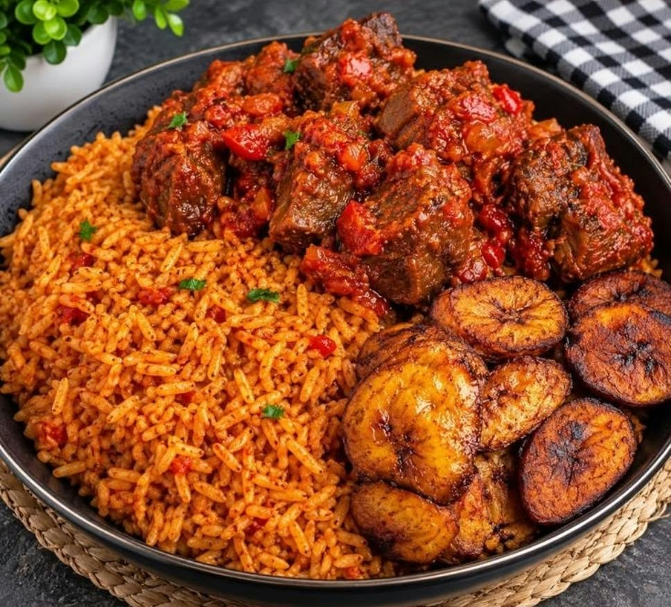
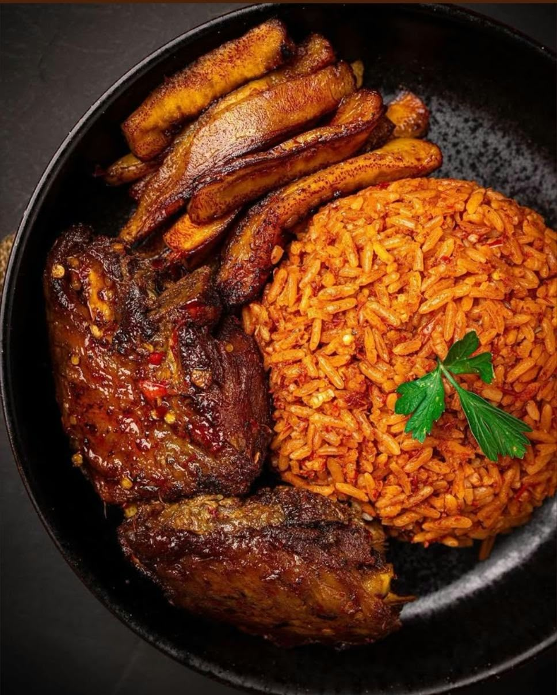
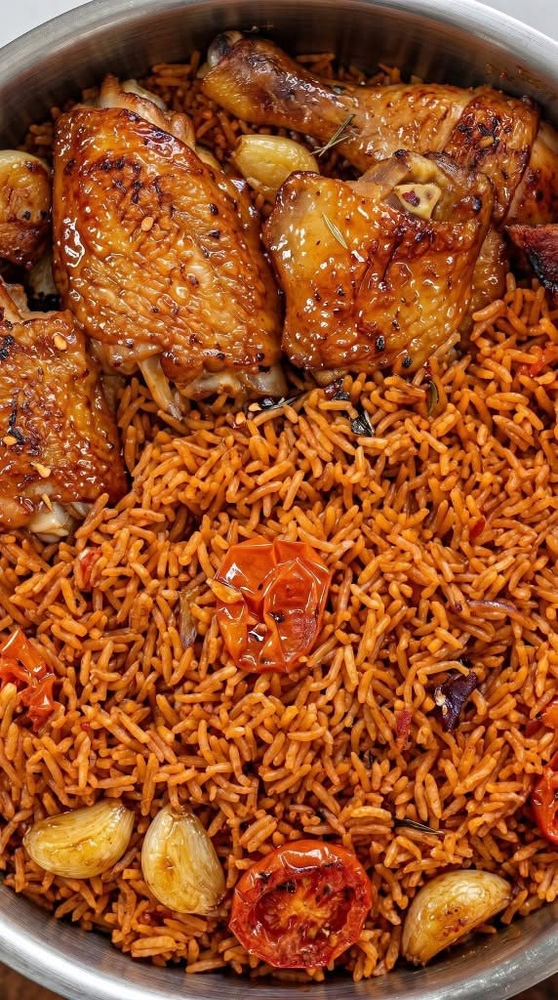
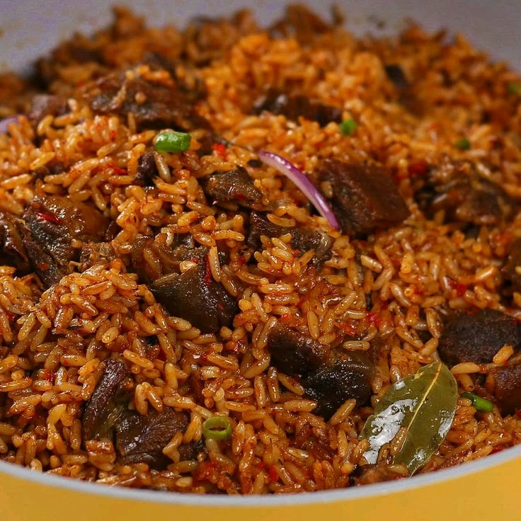
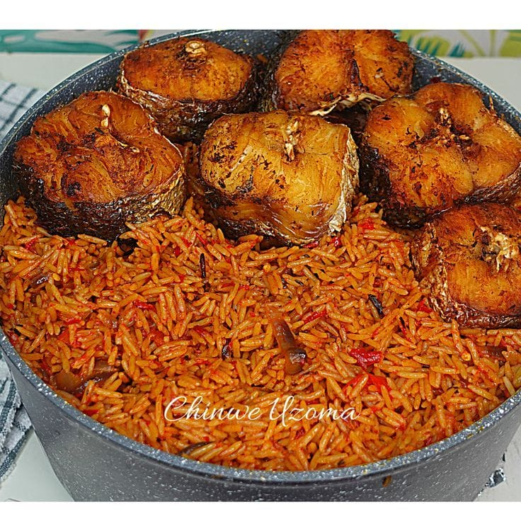
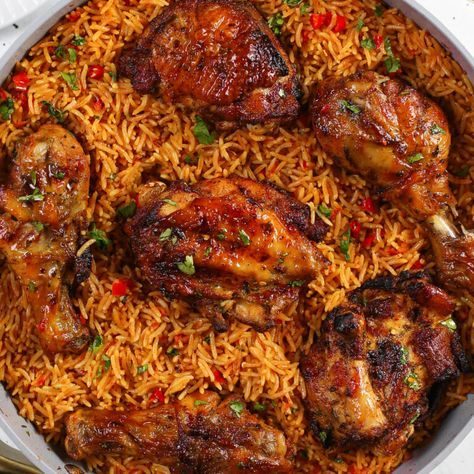

Welcome to Jollof King
Discover the secrets behind cooking the ultimate, most flavorful Jollof Rice. From smoky party Jollof to simple homemade variations, we serve the best tips and recipes fit for royalty.
Our Signature Dishes

Smoky Party Jollof
Enjoy delicious Nigerian party Jollof with rich flavour and smoky aroma.

Jollof Rice and Dodo
Enjoy our tasty Jollof rice served with delicious fried plantain.

Jollof and Chicken
A delicious combination of spicy Jollof rice and grilled chicken.
Our Food Gallery
Take a look at some of our delicious meals.



Key Ingredients Checklist
- Long-grain parboiled rice
- Fresh plum tomatoes and red bell peppers (Tatashe)
- Scotch bonnet peppers (Rodo) and onions
- Tomato paste and rich chicken stock